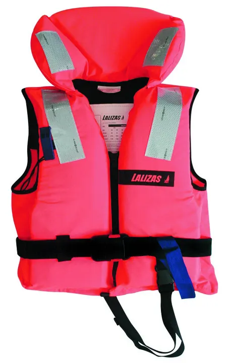

Protecção geral
Código: 40-50kg - LA710792
Um grande colete salva vidas com encosto de cabeça suporta o utilizador para manter a cabeça fora de água
LA70090
150N
LA71107
LA71216
Falta só enviar: abrir o e-mail.